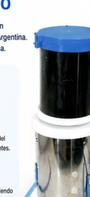
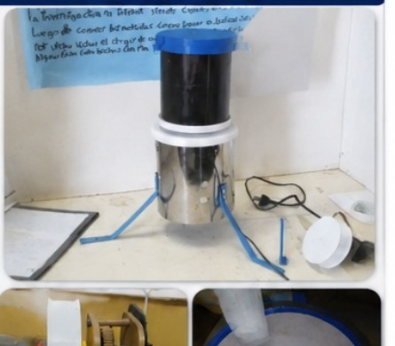
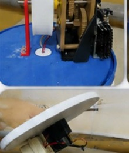
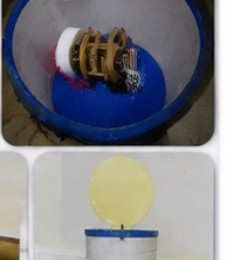
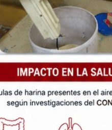
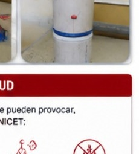
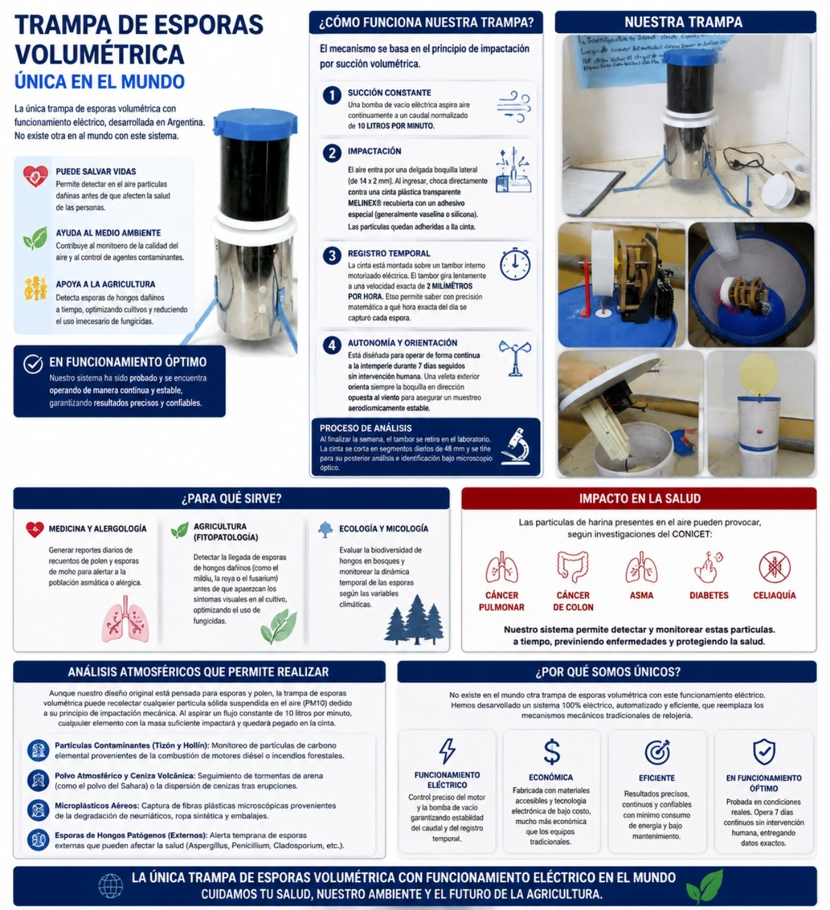

Succión constante
Una bomba de vacío eléctrica aspira aire continuamente a un caudal normalizado de 10 litros por minuto.
E.E.S.T. N°1 · CHIVILCOY · PROYECTO TECNOLÓGICO
Una trampa de esporas volumétrica con funcionamiento eléctrico, desarrollada en Argentina.
La trampa de esporas volumétrica está diseñada para captar partículas suspendidas en el aire mediante un sistema de succión e impactación.
El proyecto propone un equipo eléctrico automatizado capaz de realizar muestreos continuos y registrar temporalmente el material capturado.

El mecanismo se basa en el principio de impactación por succión volumétrica.
Una bomba de vacío eléctrica aspira aire continuamente a un caudal normalizado de 10 litros por minuto.
El aire entra por una boquilla lateral y pasa contra una cinta plástica transparente recubierta con un adhesivo especial. Las partículas quedan adheridas a la cinta.
La cinta está montada sobre un tambor interno motorizado. El proyecto indica una velocidad de giro de 2 milímetros por hora para relacionar la captura con el momento del muestreo.
El afiche indica operación continua a la intemperie durante 7 días y orientación de la boquilla para un muestreo estable.
Generar reportes diarios de recuentos de polen y esporas para aportar información sobre su presencia en el aire.
Detectar esporas de hongos de interés agrícola y aportar información para optimizar decisiones de manejo.
Evaluar la biodiversidad de hongos y estudiar la dinámica temporal de las esporas según variables climáticas.
El afiche del proyecto señala que las partículas de harina presentes en el aire pueden asociarse a distintos riesgos para la salud. Estas afirmaciones deben verificarse con fuentes científicas y profesionales antes de utilizarlas como información médica.
Aunque el diseño original está pensado para esporas y polen, el material explica que puede recolectar partículas sólidas suspendidas en el aire debido a su principio de impactación mecánica.
Control del motor y la bomba de vacío.
Materiales y tecnología electrónica de bajo costo.
Resultados precisos, continuos y confiables según el proyecto.
El prototipo fue probado en condiciones reales según la presentación.
Fotografías extraídas del afiche que nos enviaste.






Cuidamos la salud, nuestro ambiente y el futuro de la agricultura.